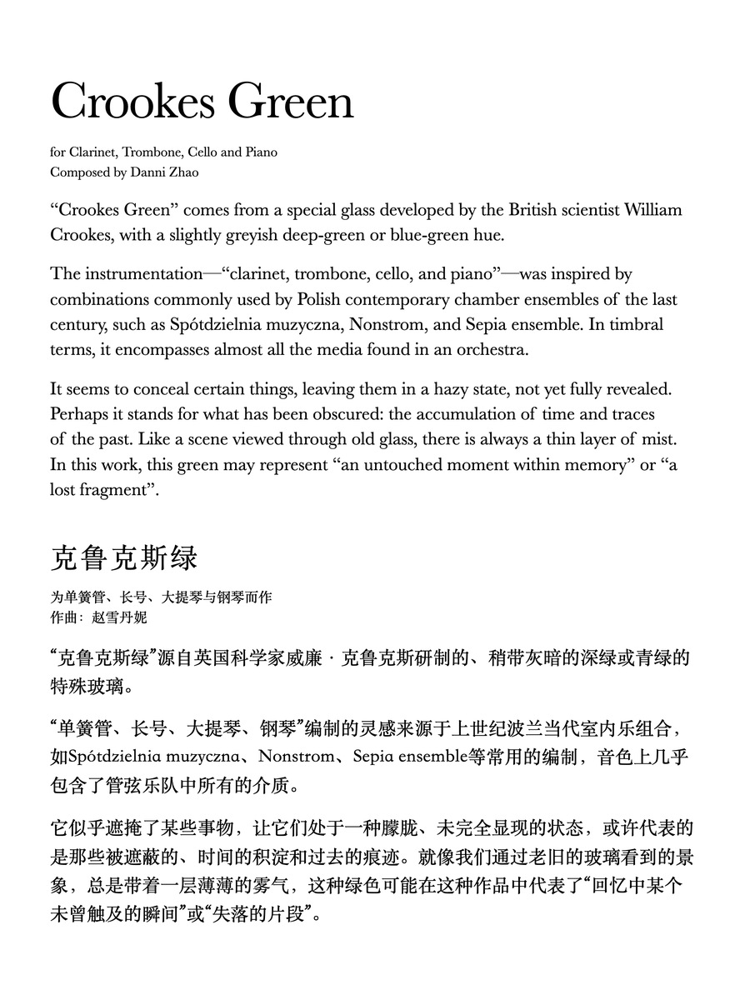
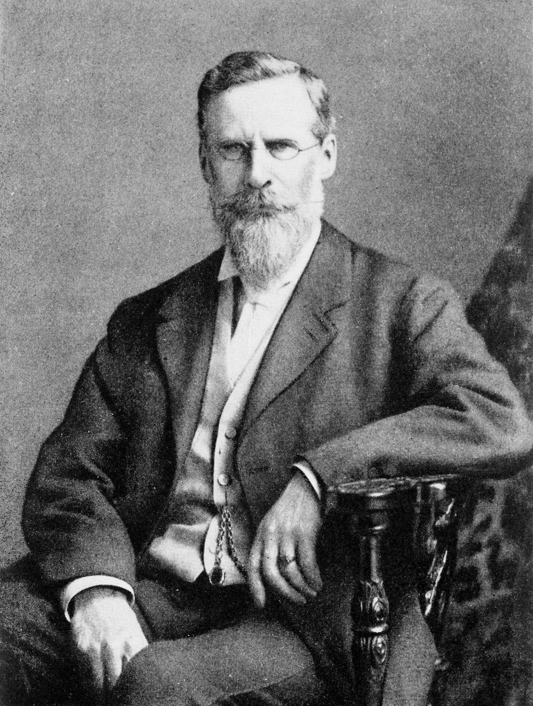
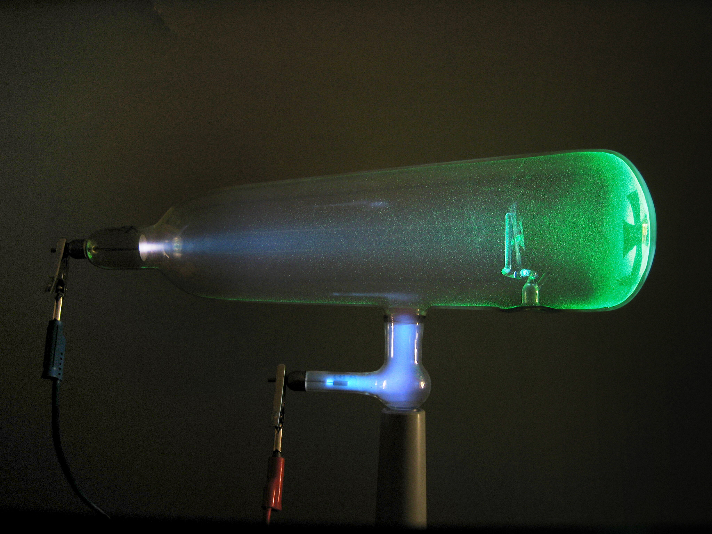

Crookes Green 克鲁克斯绿
Live performance 6 min 47 sec

June 2025. Conducted by Weixiang Zhu.
Watch live performance on YouTube
Score video 6 min 13 sec
Recording with synchronized score.
Conductor: Zhilin Zhong
Watch score video on YouTube“Crookes Green” comes from a special glass developed by the British scientist William Crookes, with a slightly greyish deep-green or blue-green hue.
About the work
“Crookes Green” comes from a special glass developed by the British scientist William Crookes, with a slightly greyish deep-green or blue-green hue.
The instrumentation—“clarinet, trombone, cello, and piano”—was inspired by combinations commonly used by Polish contemporary chamber ensembles of the last century, such as Spótdzielnia muzyczna, Nonstrom, and Sepia ensemble. In timbral terms, it encompasses almost all the media found in an orchestra.
It seems to conceal certain things, leaving them in a hazy state, not yet fully revealed. Perhaps it stands for what has been obscured: the accumulation of time and traces of the past. Like a scene viewed through old glass, there is always a thin layer of mist. In this work, this green may represent “an untouched moment within memory” or “a lost fragment”.
“克鲁克斯绿”源自英国科学家威廉·克鲁克斯研制的、稍带灰暗的深绿或青绿的特殊玻璃。
“单簧管、长号、大提琴、钢琴”编制的灵感来源于上世纪波兰当代室内乐组合，如Spótdzielnia muzyczna、Nonstrom、Sepia ensemble等常用的编制，音色上几乎包含了管弦乐队中所有的介质。
它似乎遮掩了某些事物，让它们处于一种朦胧、未完全显现的状态，或许代表的是那些被遮蔽的、时间的积淀和过去的痕迹。就像我们通过老旧的玻璃看到的景象，总是带着一层薄薄的雾气，这种绿色可能在这种作品中代表了“回忆中某个未曾触及的瞬间”或“失落的片段”。

William Crookes (1832–1919).
Wellcome Collection

Crookes tube in operation, 2007. Green fluorescence during a cathode-ray demonstration.
D-Kuru / Wikimedia Commons; light levels adjusted by GianniG46.
On timbre
You mentioned that your chosen instrumentation encompasses almost all the media found in an orchestra. Yet electronic music, with which you are more familiar, has an even richer range of timbres; one might even say that timbre holds an absolutely dominant position in electronic music. How do you view the difference in the degree to which timbre or pitch material leads a work in traditional instrumentation and electronic music?
I have always felt that timbre is not simply the “surface” of sound, but its texture, breath, and character. In electronic music, I often work on sound itself as though sculpting a material, exercising fine control and shaping it without limit. Even a single sustained tone can unfold through the logic of its texture and direction.
In traditional instrumentation, timbre operates within defined boundaries. Yet this also makes it more like a “medium with memory”: the sound of every instrument carries history and a bodily presence. For me, the question is not which material should lead the work, but how each can be awakened and arranged, ultimately establishing a sense of detail and time in listening.
你也提到，你所选择的这个编制在音色上近乎包含了管弦乐队中所有的介质。不过你更为熟悉的电子音乐领域有着更为丰富的音色，甚至可以认为，音色在电子音乐中占据绝对的主导地位——你如何看待传统编制的作品和电子音乐作品当中音色，亦或是音高材料主导程度的差别？
我一直觉得，音色其实不仅是声音的“表面”，而是它的质地、气息和性格。在电子音乐中，我经常像雕刻材料一样去打磨声音本身，精细控制、无限塑形，哪怕只是一个持续音，它的纹理和走向都能成为展开的逻辑。而在传统编制里，音色是被边界圈定的，但也因此更像是一种“有记忆的媒介”——每种乐器的声音都携带着历史和身体性。对我来说，不是用哪一种材料去主导作品，而是思考它们各自如何被唤醒，被安排，最终建立起一种听觉上的细节感和时间感。